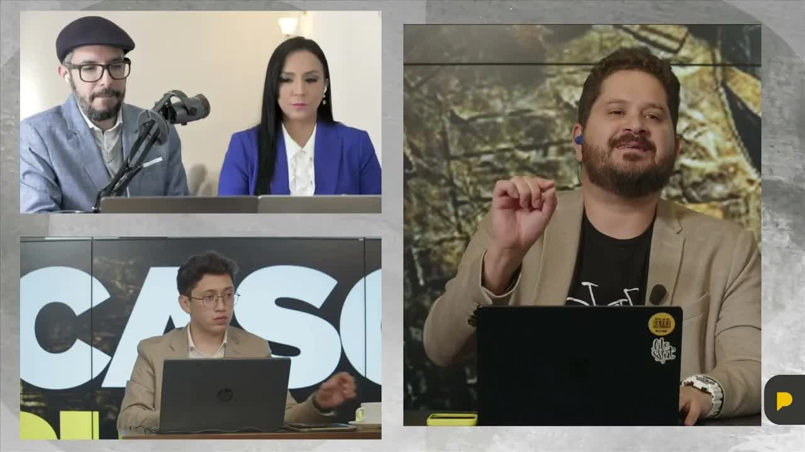
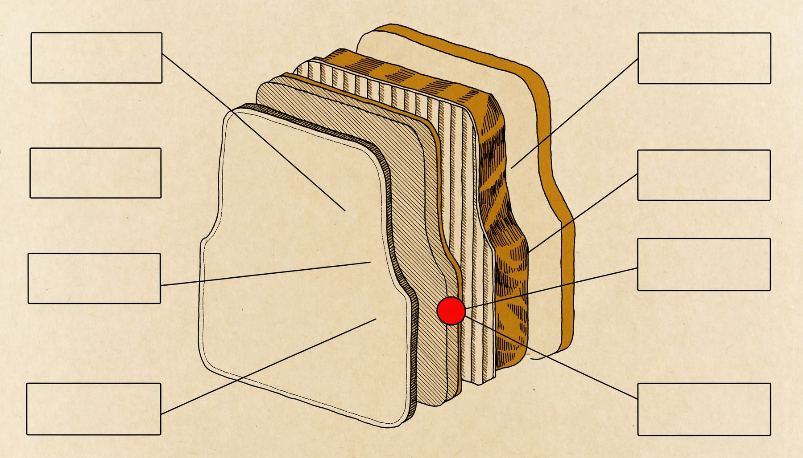
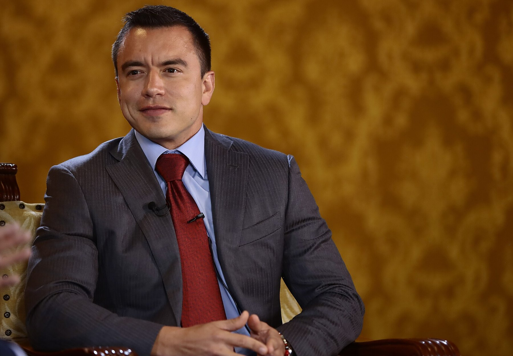
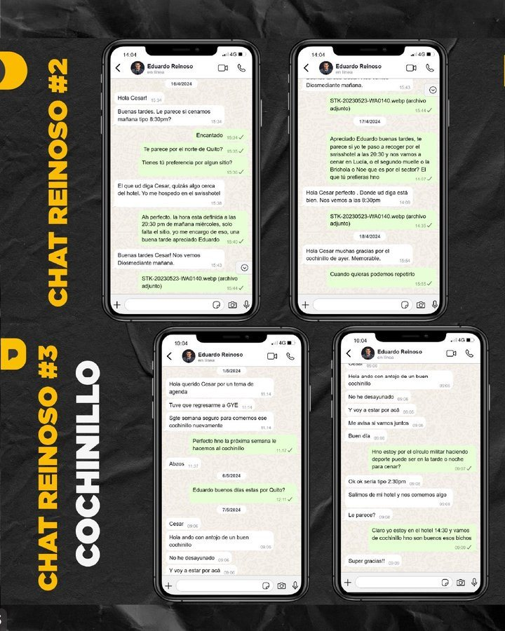
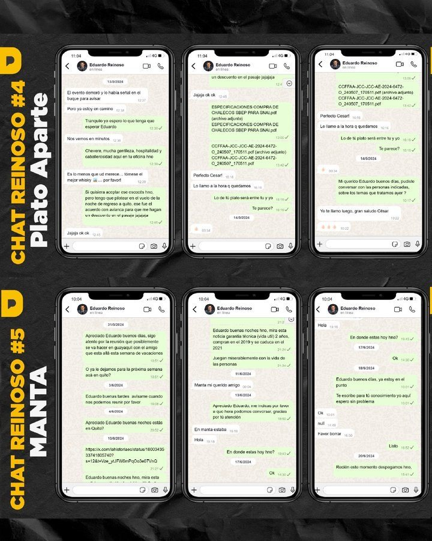
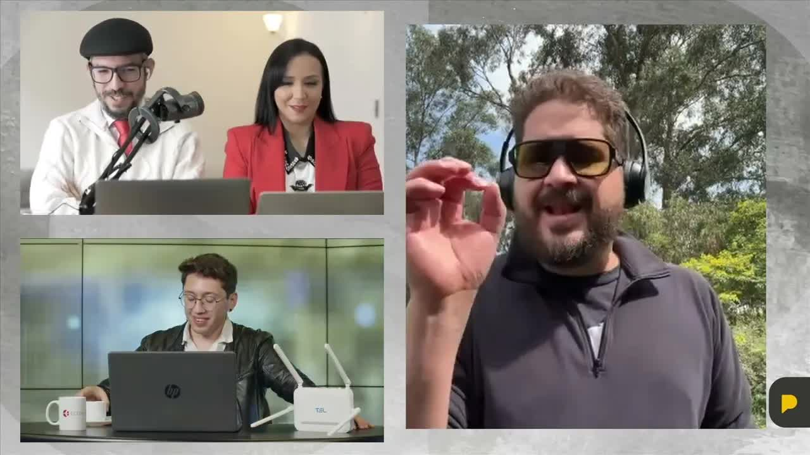
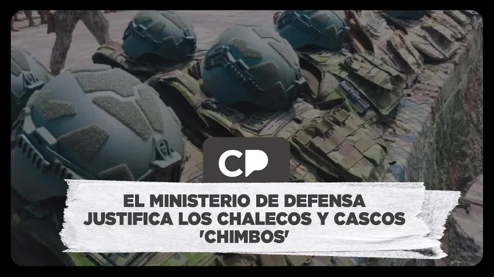
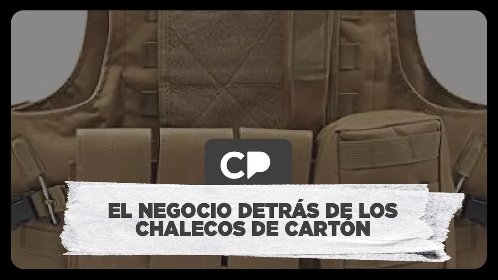
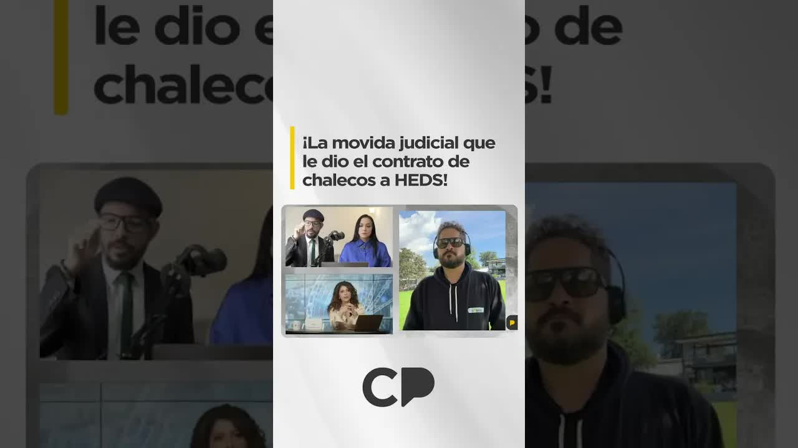
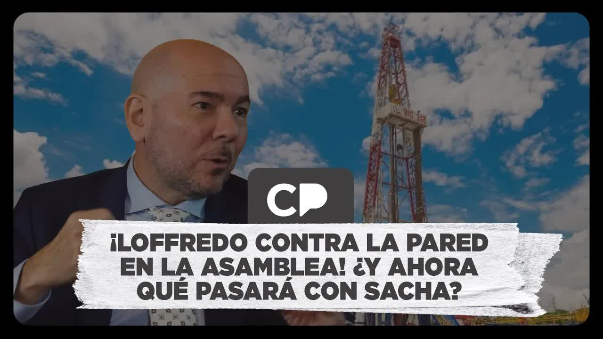

Entrega 1 · Contratos chuecos
El denunciado es Gian Carlo Loffredo, ministro de Defensa. En plena guerra contra el crimen organizado su cartera compró 34 millones de dólares en chalecos y cascos para ocho de cada diez militares, y se los compró a una empresa que el propio Estado había declarado incumplida y vetado hasta 2029. El contrato lo firmó un delegado civil del ministro. Según las fuentes militares de La Posta, la comisión nunca probó el equipo en fábrica como mandaba el contrato; cuando los oficiales del Ejército hicieron sus propias pruebas, escribieron un informe fechado una semana antes de la entrega. La Posta lo publicó y la Fiscalía abrió una investigación sobre esa compra del Ministerio de Defensa.
AcuseA raíz de la publicación, la Fiscalía abrió una investigación sobre esta compra del Ministerio de Defensa.

El 25 de febrero de 2025 el Comando Conjunto de las Fuerzas Armadas publicó un comunicado inusual: un llamado a la unidad, a que no nos tiemble el pulso. Cuando alguien llama a la unidad es porque la necesita. En la redacción de La Posta ya sabían por qué. Los jefes de las tres fuerzas estaban en desacuerdo con una compra del Ministerio de Defensa y con su ministro, Gian Carlo Loffredo.
Seis semanas antes, el 13 de enero, el presidente Daniel Noboa y Loffredo habían entregado en el fuerte Héroes de Chacras, en Machala, 31.000 cascos y 30.000 chalecos con bombos, platillos y un boletín de la Secretaría de Comunicación: el 81 por ciento del personal militar equipado con la más alta tecnología, paneles balísticos de fabricación americana que aguantan disparos de armas de mano de todo calibre, placas resistentes a fusil, certificados por un laboratorio internacional bajo la norma NIJ de Estados Unidos. Luis Eduardo Vivanco hizo la pregunta de siempre: cuánto costó, quién se llevó el contrato y con qué garantías. Consiguió algo que rara vez se consigue: el contrato reservado.


| Ítem | Cantidad | Monto |
|---|---|---|
| Chalecos balísticos nivel IIIA | 30.400 | $ 17 M |
| Cascos balísticos de corte alto, nivel IIIA | 29.247 | $ 7 M |
| Placas balísticas | 57.760 | $ 9 M |
| Portaplacas | 983 | $ 471.000 |
| Chalecos internos | 113 | incluido |
| Otros cascos | 2.169 | $ 500.000 |
| Total | $ 34.216.384 | |
| Anticipo (50 %) | $ 17.108.192 |
Contrato 2024-GUA-001, adquisición de cascos y chalecos en el marco del conflicto armado interno, firmado el 19 de agosto de 2024 y reservado desde el 26 de marzo. Por el Estado firmó Jorge Yamil Juez Cabezas, coordinador general de contratación de bienes estratégicos, delegado del ministro: ningún militar. Por el proveedor, High End Defense Solutions LLC, HEDS. Monto: 34.216.384 dólares, con un anticipo del 50 por ciento, 17,1 millones, pagadero a quince días de la firma. El administrador del contrato fue designado en el mismo documento: el subsecretario de planificación y economía de la defensa, Francisco Martínez, un civil sin experiencia en armamento. Los pliegos cerraron el 1 de julio de 2024 con quince oferentes; la adjudicación llegó el 18 de julio.
El contrato lo firmó un delegado civil del ministro. El proceso se declaró reservado cuatro meses antes de la adjudicación.
Sara Valencia: Firmó el contrato de 34 millones por HEDS. En el SRI figura como veterinaria.
El contrato exigía que cuatro oficiales probaran el equipo en fábrica. Nadie lo verificó después en un laboratorio de esa norma.
La barra compara el monto de cada ítem; la cifra de la derecha son las unidades.
120.672 piezas en total, para ocho de cada diez militares
El Ejército concluye en Santa Bárbara que la munición es de nivel II. El mando lo conoce antes de la entrega.
13 ene 2025 · Loffredo entrega los cascos y chalecos en Machala, junto al presidente Noboa.Pruebas en el polígono. Defensa intenta sacar a La Posta.
Fibra Honeywell · 20 capasLas balas quedaron alojadas en la segunda de veinte capas, según Defensa
Sin deformación en la cara posterior de la placa
La objeciónLos oficiales de la Fuerza Terrestre pidieron que las pruebas se hicieran con la norma NIJ del contrato: velocidades, calibres, munición y plastilina para medir el trauma, en un laboratorio reconocido. Ecuador no tiene laboratorio para esa norma y los cascos no pueden probarse en el país.
HEDS ya tenía historia con el Estado ecuatoriano. La Policía la había contratado para 5.508.000 municiones y en diciembre de 2023 pidió declararla proveedora incumplida. El Sercop lo hizo: inhabilitada para contratar con el Estado hasta el 2 de diciembre de 2029. La empresa, por medio de su apoderado Franklin Esparza de la Vega, demandó a la ministra del Interior, Mónica Palencia, y al comandante de la Policía con una acción de protección y perdió. Otra acción, concedida por una jueza de Samborondón, la sacó del registro de incumplidos durante dos semanas; en esa ventana Defensa firmó el contrato, y después volvió al registro. El 24 de julio de 2024 el almirante Jaime Vela, jefe del Comando Conjunto, le avisó por carta al ministro que la empresa estaba declarada incumplida. Loffredo firmó igual, 26 días después. Palencia denunció a la jueza por prevaricato y discutió con Loffredo por premiar con 34 millones a una empresa que ella había vetado; el presidente respaldó a Loffredo.

Los chats que La Posta mostró en pantalla, exportados del teléfono original y notarizados, empiezan el 11 de abril de 2024: un capitán en servicio pasivo, César Díaz, de la oferente Blindex, se presenta por WhatsApp a Eduardo Reinoso y le deja su número; al día siguiente le pregunta cómo quiere que le personalicen un chaleco de regalo. En mayo Díaz le pasa unas especificaciones de compra de chalecos, "por si le sirven al Midena". El 15 de julio le envía el documento policial que declaraba incumplida a HEDS; Reinoso responde que se equivocó de mensaje. Fue Esteban Rubio, exdirector de Bienes Estratégicos de Defensa, quien el 27 de febrero pidió en La Posta que el ministro explicara quién era Reinoso, "que manejó todas las negociaciones". Reinoso respondió por escrito que es asesor externo de comunicación, que no consta en el distributivo del ministerio y que nunca recibió dinero de proveedores; el Ministerio dijo que consultaría "a la máxima autoridad" y no volvió a responder.
Hubo otra anomalía. Para venderle a las Fuerzas Armadas hay que calificarse como proveedor de defensa ante una comisión que preside el subsecretario de Defensa, según el Decreto 470; uno de los requisitos es no ser contratista incumplido. HEDS no lo era. El contrato se hizo bajo la ley general de contratación pública, la que sirve para comprar confetis y desayunos, y no bajo el reglamento de bienes estratégicos para la defensa. Los militares, que siempre habían comprado chalecos a Israel, no participaron en los pliegos, no administraron el contrato y no fueron a probar el equipo. La cláusula décima obligaba a la contratista a recibir en su fábrica de Estados Unidos a una comisión de cuatro oficiales, uno por cada fuerza, para verificar los bienes antes del despacho. El ministro dice que viajó una comisión del Comando Conjunto; el excomandante del Ejército Luis Altamirano dijo que fue el administrador del contrato, que no es técnico, y que la comisión no cumplía los requisitos. Firmó el contrato por HEDS Sara Valencia, que en el SRI figura como veterinaria.
Cuando el equipo llegó, el Ejército, que es quien firma el acta de entrega y responde legalmente, decidió probarlo por su cuenta en Santa Bárbara, la fábrica militar de armas. La prueba la hizo la empresa ante los militares. El informe, firmado por un teniente coronel ingeniero balístico como oficial delegado y fechado el 6 de enero de 2025, una semana antes de la entrega en Machala, concluyó que la munición salía a 319 metros por segundo, velocidad de nivel II y no IIIA, y que no podía establecer ningún criterio concluyente sobre los paneles ni los cascos; recomendaba repetir la prueba bajo la norma NIJ del contrato y recurrir a un laboratorio reconocido porque el país no tiene uno. El mando lo conoció antes de la ceremonia. La Posta los bautizó chalecos de cartón. Adentro, según Altamirano, ya era un secreto a voces.
La reacción del Gobierno fue una rueda de prensa con tiros. El equipo del ministro había contestado a La Posta que estaba "100 % desplegado en operaciones de seguridad reservadas"; esa tarde Loffredo habló de show mediático en época electoral. El 27 de febrero, un día después de la publicación, encabezó pruebas balísticas en un polígono del Ejército en Quito, con el jefe del Comando Conjunto detrás. Defensa sostuvo que los chalecos se escogieron al azar; La Posta objetó que no hubo selección por lotes, ni medición de velocidad, ni pesaje de munición, ni plastilina. Seis disparos de 9 milímetros: las balas quedaron alojadas en la segunda de las veinte capas de fibra Honeywell. Un proyectil 5.56: sin deformación en la cara posterior de la placa. El ministro dijo que el informe era obra de "un par de militares con intereses oscuros en un papel membretado" y que la Fuerza Terrestre evaluaría acciones disciplinarias. Invitaron a los medios afines. A Jorge Navarrete, de La Posta, que llegó sin acreditación, una subsecretaria de la Secom intentó sacarlo y colegas le gritaron que se fuera a Canadá; un coronel lo dejó grabar. Altamirano, excomandante del Ejército, dijo que él no se pondría ese chaleco. Rubio propuso lo obvio: tomar tres o seis chalecos de cada lote y probarlos con un tercero imparcial.
Las balas quedaron alojadas en la segunda de veinte capas, según Defensa
Sin deformación en la cara posterior de la placa
Los oficiales de la Fuerza Terrestre pidieron que las pruebas se hicieran con la norma NIJ del contrato: velocidades, calibres, munición y plastilina para medir el trauma, en un laboratorio reconocido. Ecuador no tiene laboratorio para esa norma y los cascos no pueden probarse en el país.
El ministro que tiene la obligación de darle la cara a los cuestionamientos escoge a los medios que no lo van a hacer sentir incómodo. Eso se llama propaganda, no se llama periodismo.
Andersson Boscán, 27 de febrero de 2025
El 5 de marzo La Posta publicó la segunda parte, dos horas y veintidós minutos: los chats entre César Díaz, de la oferente Blindex, y dos hombres del círculo del ministro, Eduardo Reinoso y el comunicador guayaquileño Andrés Tacle, ninguno con cargo en Defensa. Tacle había presentado una cotización al ministerio en junio de 2024 y le informaba a Díaz en tiempo real cuántas ofertas entraban y cuál no cumplía, en un proceso reservado. Díaz y Reinoso se reunieron al menos cinco veces, algunas en el propio ministerio; Reinoso pidió borrar mensajes. La fuente era el propio Díaz, que perdió: "High End tuvo mejor relación con los asesores". Díaz le escribió a Reinoso que le repitiera su amenaza de que tenía cuatro años en el poder para arruinarlo. Tacle respondió que tiene una amistad de años con Reinoso y que colaboró con el ministro en entrenamiento de medios. La Posta pidió a Carondelet separar o denunciar a Loffredo. El 7 de marzo, un video corto sobre la pelea judicial que le abrió la puerta a HEDS. Desde Uruguay, Luisa González aprovechó: nos hablaron de libertad, pero era su libertad, entiéndase impunidad para hacer de Ecuador su negocio familiar.
El 11 de marzo de 2025 el Sercop dijo en la Asamblea que la Policía había sancionado mal, a las personas y no a la empresa, y admitió que el contrato reservado no pasó por sus normas; Loffredo no acudió. Ana Galarza había pedido información por oficio meses antes de la publicación. El contralor Mauricio Torres pidió a la Asamblea levantar la reserva del contrato. La sesión se convocó para el 13 de marzo de 2025. Ese mismo día se supo que la Fiscalía había abierto una indagación previa por peculado, artículo 278 del código penal, contra quien resultara responsable en el Ministerio de Defensa. El contralor encargado, Carlos Sánchez, suspendió entonces el pedido de desclasificación: toda la documentación había pasado a cadena de custodia. La Asamblea se quedó sin materia.

Loffredo no salió del cargo. En abril de 2025 La Defensa documentó otro contrato millonario de Defensa con la misma empresa. Meses después, Santa Bárbara EP, la empresa pública del sector en liquidación, adjudicó 214.751 dólares a Alcolisti LLC, representante en Ecuador de HEDS, para chalecos, cascos y escudos del personal de custodia del Banco Central. Lo firmó su gerente, Miguel Weisson Chiriboga, designado el 15 de julio con un impedimento para ejercer cargos públicos registrado en el Ministerio del Trabajo, según Radio Pichincha. En agosto de 2025 la fábrica militar del Perú adjudicó a HEDS, también inhabilitada allá, 10.164 chalecos para su policía.
La indagación previa sigue abierta y sin procesados. Los 30.000 chalecos están en uso. Nadie los ha probado en un laboratorio certificado bajo la norma que exigía el contrato.
Actualizado el 5 de septiembre de 2026
La Policía pide declarar a HEDS proveedora incumplida por 5,5 millones de municiones.
Defensa declara reservada la información del proceso.
Quince oferentes. Un asesor externo del ministro le cuenta al oferente Díaz cuál no cumple.
Díaz le envía a Reinoso el documento policial que declara incumplida a HEDS.
34 millones, con presupuesto referencial de 39.
El almirante Vela advierte al ministro que HEDS está declarada incumplida.
HEDS presenta otra acción de protección contra Interior y la retira al día siguiente.
Contrato 2024-GUA-001. Anticipo del 50 %.
El registro del Sercop inhabilita a HEDS hasta el 2 de diciembre de 2029; la declaratoria de incumplida era anterior a la firma.
El Ejército concluye en Santa Bárbara que la munición es de nivel II. El mando lo conoce antes de la entrega.
Loffredo entrega los cascos y chalecos en Machala, junto al presidente Noboa.
El Comando Conjunto llama a la unidad.
Contratos chuecos ponen en riesgo a los militares.
Pruebas en el polígono. Defensa intenta sacar a La Posta.
Los chats y el negocio detrás.
Admite que el contrato no pasó por sus normas. Loffredo no acude.
Indagación previa por peculado. Contraloría suspende la desclasificación.
La fábrica militar peruana le adjudica 10.164 chalecos a HEDS, también inhabilitada allá.
La indagación sigue abierta. Loffredo, en el cargo.
Ministro de Defensa.
Asesor externo de comunicación del ministro, sin cargo en Defensa. Según los chats, manejó las negociaciones.
Comunicador guayaquileño del círculo del ministro. Informaba al oferente Díaz en tiempo real.
Ministra del Interior. Declaró incumplida a HEDS y denunció por prevaricato a la jueza que la sacó del registro.
Firmó el contrato de 34 millones por HEDS. En el SRI figura como veterinaria.
Proveedor de los chalecos y cascos.
Representante de HEDS en Ecuador. Representante legal: César Soria Estrada.
Gerente de Santa Bárbara EP. Firmó el nuevo contrato.
Fotos vía Wikimedia Commons. Gian Carlo Loffredo: Michelleav89 (CC0); Mónica Palencia: Mónica Palencia. palenciamonica.com (CC0).
Llamó al informe "un show mediático en época electoral" y obra de "un par de militares con intereses oscuros en un papel membretado". Dijo que una comisión del Comando Conjunto viajó a Estados Unidos, que las pruebas se hicieron en un laboratorio de norma NIJ, que el proveedor le vende chalecos al FBI y que él "no tenía una bola mágica" para saber del veto. Sobre los tiros del 27 de febrero, Defensa sostuvo que las balas de 9 mm quedaron en la segunda de veinte capas.
Reinoso: es asesor externo, no trata con proveedores y no recibió dinero. Tacle: amistad de años con Reinoso y colaboración puntual con el ministro en entrenamiento de medios.
Convocó pruebas balísticas en el Comando del Ejército el 27 de febrero de 2025 y excluyó a La Posta.
"Nos hablaron de libertad, pero era su 'libertad', entiéndase impunidad para hacer de Ecuador su negocio familiar" (27 de febrero de 2025, desde Uruguay).





principales jefes de las distintas fuerzas en una posición de rechazo a lo que ha hecho el Ministerio de defensa principalmente el ministro de defensa giancarlos lofredo en relación a una adquisición más que opaca oscura Aparentemente muy al margen de la ley de los procedimientos tradicionales y lo más importante que puede poner en riesgo o que está poniendo en riesgo la vida de miles de soldados que día a día día y …
Leer la transcripción completacuestionamientos que de ese informe y y segundo con ese informe en la mesa yo no me pondría uno de esos chalecos para ir no sé si es claro y luego nuestro segundo invitado que un experto en contratación de material de defensa específicamente material de defensa fue una de las personas que se encargó del abastecimiento especial de este ministerio relató todas las inconsistencias que tiene este procedimiento desde su i…
Leer la transcripción completagracias a nuestra audiencia sus mensajes de apoyo estamos aquí para contarte como siempre la verdad A ver es una mañana agitada hace pocos minutos el ministro de defensa giancarlos lofredo quien está en medio de una polémica luego de anuncio que si era la posta en la que se revelara un informe del ejército ecuatoriano donde unos especialistas en armas del ejército contradicen aquello que dice el Ministerio de defensa…
Leer la transcripción completaceniza para todas las personas que jugaron Carnaval así que ya saben vayan a confesarse vayan a la iglesia a reflexionar que hay algunas personas que no han reflexionado ah eh Hay muchas cosas pasando en el país hay un escándalo puerte alrededor del campo Sacha y del ordeño hay un escándalo alrededor de los chalecos de cartón te contamos de eso te habíamos prometido que íbamos a seguir mirando y cuando la posta Mira …
Leer la transcripción completaayer publicábamos esto de el ministro sabía desde el 24 de Julio cuando el almirante vela le manda una carta que High end Solutions la empresa que provee los chalecos de cartón estaba declarada contratista incumplida del estado y hay que me dice pero bueno ustedes habían dicho que esto es una fecha posterior déjame aclarar un poco eso tenían prohibición de contratar con el estado eh el 24 de Julio El Comando conjunto…
Leer la transcripción completaDaniel Novoa en una en comunicado que publicaba la semana anterior en sus redes sociales además también vamos a conversar de lo que pasó ayer en la comisión de seguridad el ccop fue a hablar de los chalecos de cartón sobre lofredo y va a tener que regresar a la comisión Ya lo vamos a comentar señor Anderson boscán Qué dice la people bueno se acabó se acabó Sacha y lo ha confirmado esta mañana con con Carlos rojas eh …
Leer la transcripción completaTranscripciones de los subtítulos automáticos de cada programa. No están corregidas a mano: sirven para buscar una frase y llegar al minuto exacto del video, no como cita textual literal.
La Fiscalía abrió el expediente y la Contraloría se apartó.
En Ecuador a través de Alcolisti; en Perú, a la policía.
Los programas y clips originales se alojan en este sitio. Los chats de la segunda entrega fueron exportados del teléfono original y notarizados. Los documentos del Ejército citados se incorporarán cuando estén digitalizados para publicación.